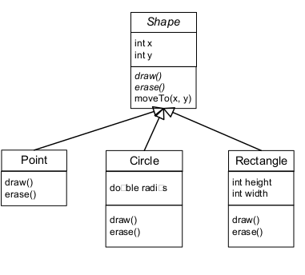
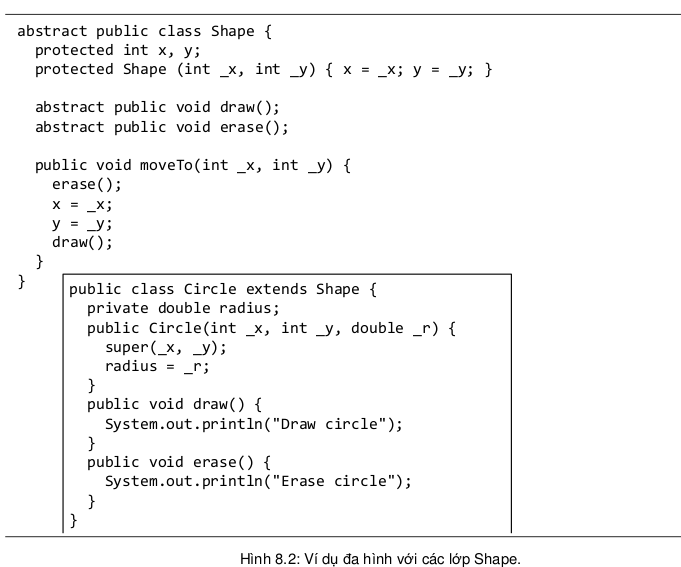
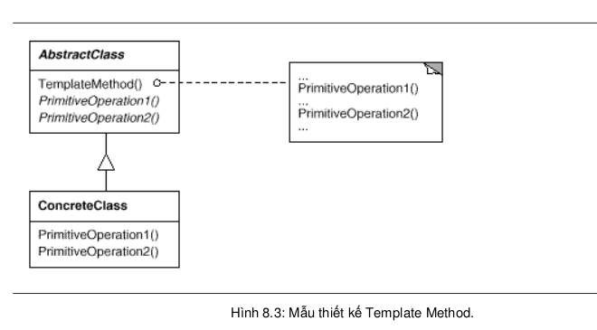

8.4. VÍ DỤ VỀ ĐA HÌNH
Giả sử ta muốn viết một lớp danh sách để quản lí các đối tượng Dog mà không
dùng đến các cấu trúc danh sách có sẵn trong thư viện Java. Bước đầu, ta chỉ cần
một phương thức add() để đưa các đối tượng Dog vào danh sách. Ta dùng một
mảng Dog đơn giản với kích thước 5 để lưu các đối tượng Dog được đưa vào danh
sách. Khi trong danh sách đã đủ 5 đối tượng, ta vẫn có thể tiếp tục gọi phương thức
add() nhưng nó sẽ không làm gì. Nếu chưa đủ 5, phương thức add() sẽ gắn đối
tượng tiếp theo vào vị trí tiếp theo còn trống rồi tăng chỉ số của vị trí tiếp theo còn
trống (nextIndex) thêm 1.
Nhưng nếu ta còn muốn quản lí cả mèo lẫn chó trong danh sách? Có một vài lựa
chọn. Thứ nhất: viết thêm lớp MyCatList dành riêng cho các đối tượng Cat. Thứ hai:
viết một lớp DogAndCatList chung, trong đó có hai mảng, một dành cho các đối
tượng Dog, một dành cho các đối tượng Cat. Thứ ba: viết một lớp AnimalList trong
đó có thể chấp nhận các đối tượng thuộc lớp con bất kì của Animal (phòng trường
hợp đặc tả lại thay đổi để yêu cầu nhận thêm các loài vật khác). Lựa chọn thứ ba gọn
gàng và có khả năng mở rộng cao nhất nên ta sẽ dùng cho phiên bản thứ hai. Ta sẽ
sửa lớp MyDogList, tổng quát hóa nó để chấp nhận các lớp con bất kì của Animal
thay vì chỉ Dog. Lô-gic chương trình vẫn giữ nguyên như cũ, chỉ có các thay đổi
được đánh đậm trong đoạn mã dưới đây:
Ta lại lấy ví dụ Shape đã nói đến ở đầu chương. Lớp cha tổng quát Shape nên là lớp trừu tượng do ứng dụng không cần và không nên tạo đối tượng Shape. Ngoài ra, các phương thức draw và erase của lớp này cũng nên là phương thức trừu tượng do ta không thể nghĩ ra nội dung gì hữu ích cho chúng. Các lớp con cụ thể, Point, Circle, Rectangle, và các lớp mà sau này sẽ bổ sung vào thư viện khi cần, sẽ định nghĩa các phiên bản với nội dung riêng cụ thể phù hợp với chính mình. Chẳng hạn như ví dụ trong Hình 8.2.
 Khác với draw và erase, moveTo lại là phương thức có thể định nghĩa ngay tại lớp Shape. Thuật toán ba bước cho moveTo là như nhau cho mọi hình: (1) xóa tại vị trí hiện hành, (2) sửa tọa độ hình, (3) vẽ tại vị trí mới, mặc dù xóa như thế nào và vẽ như thế nào là tùy theo từng loại hình cụ thể. Hiệu ứng đa hình cho phép moveTo dùng đến các phiên bản draw và erase khác nhau tùy theo nó được gọi cho đối tượng thuộc loại hình nào. Khi thư viện được bổ sung thêm các lớp đặc tả các loại hình khác, ta chỉ phải cài draw và erase cho loại hình đó mà không phải làm thêm gì cho các phương thức biến đổi hình có quy trình chung đã được định nghĩa sẵn tương tự như moveTo.
Ví dụ này cũng minh họa một mẫu thiết kế có tên Template Method (phương thức khuôn mẫu). Xem Hình 8.3. Ở đây, Shape là lớp trừu tượng (AbstractClass) định nghĩa một phương thức khuôn mẫu moveTo, và quy định hai thao tác cơ bản (PrimitiveOperation) là erase và draw mà phương thức khuôn mẫu dùng đến. Circle là lớp con cụ thể (ConcreteClass), nó cài đặt các thao tác cơ bản này. Đây là một trong những mẫu thiết kế thông dụng nhất.
